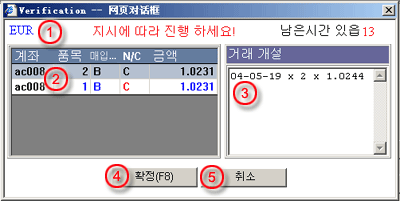

주문 확인
확인 대화창은 거래 지시사항을 무역 데스크에 제출 전에 유용하다. 사용자는 다음 정보를 확인하면 된다:
| 1 | 계기 - 거래에 대한 계기 코드 |
 확인
대화창 |
| 2 | 거래 상세사항 - 계좌, 거래량, 구매/결재 신규 혹은 정산, 그리고 제한/중지 (Limit/Stop) 주문시 선택권을 포함하는 거래에 대한 상세사항 | |
| 3 | 공개 주문 - 선택된 거래가정산 목적이면, 날짜, 청산 양과 가격을 포함하는 공개 주문에 대한 설명 | |
| 4 | 확인 (F8) - 거래 데스크에 주문 제출을 위한 버튼 | |
| 5 | 취소 - 거래을 취소하고 거래 지시사항 대화창을 퇴장하기 위한 버튼 |